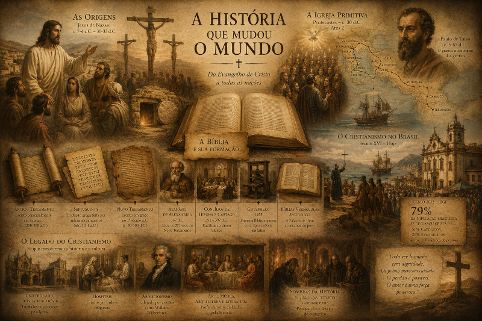

A História que Mudou o Mundo
O cristianismo é uma das religiões com maior número de seguidores no mundo, com cerca de 2,4 bilhões de adeptos (aproximadamente 31% da população global), segundo o Pew Research Center. Nascido em uma pequena região do Oriente Médio há mais de dois mil anos, o cristianismo se espalhou por todos os continentes e hoje é a religião com mais seguidores no planeta.
As Origens
Jesus de Nazaré nasceu em Belém, na Judeia, entre 7 e 4 a.C., durante o reinado de Herodes, o Grande. Seus ensinamentos sobre amor, perdão e o Reino de Deus atraíam multidões de pessoas comuns, pescadores, cobradores de impostos, mulheres e crianças. Segundo o Evangelho de João, seu ministério durou cerca de três anos; segundo os evangelhos sinóticos (Mateus, Marcos e Lucas), aproximadamente um ano. Durante esse tempo, ele transformou a visão de mundo de seus seguidores. Sua morte na cruz e, segundo a fé cristã, sua ressurreição três dias depois, são considerados pelos cristãos como o evento central de toda a história humana. A crucificação ocorreu entre 30 e 33 d.C., durante o governo de Pôncio Pilatos como prefeito da Judeia. A ressurreição é o fundamento da fé cristã e a razão pela qual bilhões de pessoas ao redor do mundo celebram a Páscoa até hoje.

A Igreja Primitiva
Segundo o livro de Atos dos Apóstolos (escrito por Lucas, provavelmente entre 80-90 d.C.), no dia de Pentecostes os discípulos foram cheios do Espírito Santo e começaram a pregar com coragem. A partir dali, saíram pregando com coragem e a mensagem do evangelho se espalhou rapidamente pelas cidades do Mediterrâneo. O apóstolo Paulo foi uma das figuras mais importantes nessa expansão. Nascido como Saulo de Tarso e inicialmente um perseguidor dos cristãos, ele teve uma experiência transformadora no caminho para Damasco (Atos 9; Gálatas 1:15-16) e se tornou o maior missionário do primeiro século. Ele nunca conheceu Jesus em pessoa antes da crucificação. Suas cartas são os documentos cristãos mais antigos que preservamos, escritas antes dos evangelhos (c. 50-60 d.C.). Ele percorreu milhares de quilômetros a pé e de barco, fundando comunidades cristãs por toda a Europa e Ásia Menor.
A Bíblia e sua Formação
A Bíblia como conhecemos hoje não surgiu de uma vez. O Antigo Testamento foi escrito principalmente em hebraico, com partes em aramaico (Daniel, Esdras). A Septuaginta, tradução grega feita por judeus alexandrinos entre os séculos III e I a.C., foi amplamente usada pelos primeiros cristãos. O Novo Testamento foi escrito em grego durante o primeiro século após Cristo, pelos apóstolos e seus colaboradores. O processo de definir quais livros fariam parte do cânon bíblico durou séculos e envolveu debates e discernimento. Em 367 d.C., Atanásio de Alexandria listou os 27 livros do Novo Testamento atual pela primeira vez. Os concílios de Hipona (393 d.C.) e Cartago (397 d.C.) ratificaram essa lista como canônica. Em 1455, Johannes Gutenberg imprimiu a primeira Bíblia com tipos móveis (em latim), tornando a Palavra de Deus mais acessível. As primeiras Bíblias impressas em línguas vernáculas (alemão, inglês, francês) surgiram no século XVI, durante a Reforma.
O Cristianismo no Brasil
O cristianismo chegou ao Brasil com os portugueses no século XVI. Em 1549, a primeira missão jesuítica liderada por Manuel da Nóbrega celebrou a primeira missa em Salvador. Os jesuítas foram os primeiros a evangelizar os povos indígenas da costa brasileira. Ao longo dos séculos, o catolicismo dominou a paisagem religiosa do país, mas a partir do século XIX as igrejas protestantes e evangélicas começaram a crescer, com a abertura dos portos (1808) e a imigração europeia. Hoje o Brasil é um dos países com maior número de cristãos no mundo. Segundo o Censo de 2022 do IBGE, cerca de 79% da população brasileira (aproximadamente 160 milhões de pessoas) se declarou cristã, sendo 50% católicos e 26% evangélicos. Os evangélicos cresceram 25% em relação ao censo de 2010. O evangelicalismo está presente em todas as regiões do país, das grandes metrópoles aos pequenos municípios do interior.
O Legado do Cristianismo
A influência do cristianismo vai muito além dos templos e igrejas. Muitas das primeiras universidades europeias (Bolonha, 1088; Paris, c. 1150; Oxford, c. 1096) foram fundadas ou apoiadas pela Igreja Católica. Os primeiros hospitais europeus foram criados por ordens religiosas. O movimento abolicionista na Inglaterra foi liderado por cristãos evangélicos como William Wilberforce. A arte, a música, a arquitetura e a literatura ocidental foram profundamente moldadas pela fé cristã ao longo dos séculos. No entanto, ao longo da história, o cristianismo também foi usado para justificar perseguições, como a Inquisição (séculos XIII-XIX) e o antissemitismo promovido por alguns líderes cristãos. Estes eventos são reconhecidos por muitas denominações cristãs como desvios do evangelho e são objeto de arrependimento e revisão histórica. Mesmo quem não se considera cristão vive em uma cultura que foi parcialmente formada pelos valores do evangelho: a ideia de que todo ser humano tem dignidade, que os pobres merecem cuidado, que o perdão é possível e que o amor é uma força poderosa.